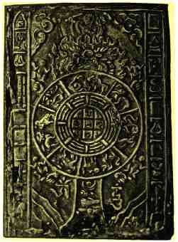

B) Les particularités du chiffre
| Depuis son invention, le chiffre a été un moyen original de se divertir, de poser des énigmes, de communiquer , etc ... En effet, le chiffre recèle de petites particularités qui en font un outil spécial pour l'homme. Un des exemples les plus frappant de cet originalité et de cette complexité du chiffre est bien le carré magique.
Dans le carré magique, les chiffres se parent de vertus extraordinaires : 4
9 2
La somme des chiffres de ce carré magique est égale à 15 dans toutes les directions. Ce carré possède le pouvoir d'opérer des charmes, de faire découvrir des trésors cachés, d'éloigner l'incendie, de préserver des accidents. Pour les juifs, le caractère exceptionnel de ce carré magique tenait à ce que 15 en hébreu s'écrit avec les deux premières lettres de Jéhovah. Les chiffres tiennent une place importante dans la Cabale et dans le nouveau Testament, tout au long de l'apocalypse de Saint Jean où il est question notamment de la bête qui monte de la terre et dont le nombre est 666. Nombres d'initiés numérologues ont crus reconnaître Néron dans ce monstre, d'autres assurent qu'il s'agit de Napoléon. Certains de nos contemporains n'ont pas renoncés à percer les mystères attachés au chiffre; mais ils utilisent un vocabulaire rénové inspiré de la psychanalyse, qui leur permet désormais de s'interroger sur la symboliques des nombres .
Jeu en ivoire permettant de construire des carrés magiques
Lorsqu'ils se substituent au langage, les chiffres servent à masquer un message qui n'est destiné qu'à certaines personnes. Dans le cas le plus terre-à-terre, les chiffres sont utilisées pour coder un texte qu'on veut dissimuler à l'ennemi. On sait le rôle des bureaux du chiffre dans la vie des unités militaires, des ambassades et même aujourd'hui des grandes entreprises. On connait aussi le travail inverse des décrypteurs qui cherchent à percer les secrets qu'on prend tant de soin à leur cacher. Il y a des exemples fameux de messages décryptés qui ont permis d'éviter de terribles revers, tel celui qui incita le général Mangin à intervenir à Méry-Courcelles le 11 juin 1918 et lui donna aussi l'occasion de stopper l'offensive allemande. D'autres messages décryptés n'ont pas suscités l'intérêt qu'ils méritaient : par exemple, celui qui annoncait l'attaque japonaise de Pearl Harbour . D'autres messages à contenu moins concret peuvent également comporter des chiffres. Nous voulons parler içi des messages dont le décryptement doit en principe révéler aux initiés les voies secrètes menant à la découverte de la vérité. La tradition en la matière est surrabondante. Les pythagoriciens par exemple prirent le nombre pour point de départ de leur réflections. Le nombre était, selon eux : «le support de la vérité, le maillon de la chaîne qui constitue la prison dans laquelle l'unité divine a renfermé l'univers.».  Came magique tibétaine. D'origine chinoise, les cames sont issues de la magie. Ces objets sont mystérieux: on peut y retrouver des codes, ainsi que des messages cachés. Il existe entre la machine et l'utilisateur un problème de traduction.Si très tôt, l'ordinateur a été un fort en expression, il a pris du retard dans la compréhension. Il lui est facile, en effet, d'éditer sur machine à écrire, par exemple, les résultats de ses travaux sous une forme intelligible pour nous : il lui suffit, pour cela, de faire correspondre à chaque code qu'il produit le chiffre correspondant, à partir d'une sorte de lexique dont il dispose. La démarche inverse, en revanche, impossible jusqu'à ces dernières années, demeure pour lui très délicates. Cela tient à ce que le processus d'identification des formes, qui nous permet de lire, est un fait de perception extrêmement complexe où l'oeil et le cerveau interviennent concurremment. De là vient la nécessité de traduire en code toute information destinée à l'ordinateur, qui ne sait enregistrer et traiter que deux sortes de signaux, l'absence ou la présence d'impulsion électrique. Toute information qui lui est destiné doit ainsi être codée par des suites de 0 et de 1, constituant des nombres binaires, traduction en langage machine des chiffres que nous employons. Pour coder les chiffres décimaux, des suites de quatre signes binaires sont nécessaires. Il est possible, certes, de produire manuellement ces codes sur une bande de papier se déroulant régulièrement et pas à pas, en perforant un trou pour écrire 1 et en ne perforant pas pour 0 ; mais il est préférable de recourir à un codage un peu plus évolué, comme celui utilisé sur les cartes mécanographiques où on écrit comme sur une portée musicale qui comporterait dix lignes, une pour chaque chiffre. Il suffit dans ce cas où en progressant de colonne en colonne où d'un seul trou correspondant au chiffre pour que l'ordinateur sache transformer cette perforation unique en un code à quatre signes binaires. C'est pourquoi, très tôt, on a cherché à simplifier la communication humain-ordinateur en imaginant, au lieu du codage manuel, des sytèmes qui permettent une lecture automatique directe à partir des documents portant l'information. Les premières applications de systèmes permettant la lecture automatique ont exploité l'idée selon laquelle un signe graphique, astucieusement dessiné, peut simultanément contenir les éléments d'information codée appropriés à la lecture par machine et présenter une forme générale lisible par l'homme. Ces éléments codés peuvent être, par exemple, des bâtonnets rendus significatifs par leur écartement, leur épaisseur, leur orientation, leur dimension ou leur position respective. Ces bâtonnets sont imprimés avec de l'encre contenant de l'oxyde de fer magnétisable. Ces caractères constituent la famille des caractères à lecture magnétique ; le plus utilisé étant le CMC 7.
|